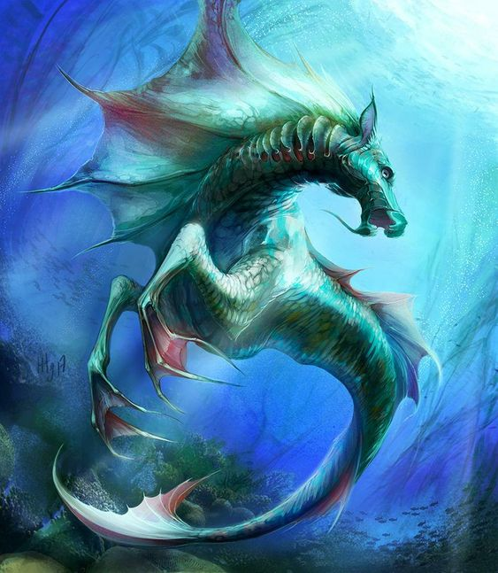

Force

Résistance

Dextérité
Magie
Ingénierie

Environnement : Archipel - Mers - Ville de Nodéis
Durée de vie moyenne : 450 ans
Taille : M
Système politique : Royauté bonne envers le peuple
Statut politique : Membre de la ligue de Vésir
Relations hostiles : -
Alliés : Ligue de Vésir
Croyance : Myzias
Force
Résistance
Dextérité
Magie
Ingénierie
Capacités innées : Respiration sous-marine et aisance à se déplacer dans l’eau, ainsi qu’une peau écailleuse si le corps est immergé, donc plus résistante
Facilités magiques : Maîtrise de l’eau et des différentes substances liquides
Impossibilités : Maîtrise des différentes formes du feu
Les Nagas naquirent dans les Temps ancestraux sous la race des mystiques. Ces derniers étaient constitués de nos sujets et des Méduses, qui finirent par divergences de terrains par se diviser, donnant naissance à de lourds conflits militaires. Finalement, le couronnement de Myriade, fille bâtarde des deux peuples, mettra un terme à la guerre et unifiera les deux peuples, ainsi que les Trolls et les Taurens sous la ligue de Vésir et le culte de Myzias.
Profil type : Distingué - Chic - Loyal - Sérieux - Raisonnable
Alimentation : Halieutiques et cultures de vases
Montures : Hippocampus
Physiologiquement, les Nagas sont humanoïdes et arborent des caractéristiques ichtyennes (relatives aux poissons), pouvant moduler le bas de leur corps entre de solides jambes humaines et une queue de poisson. Cette dernière leur permet de vivre dans les eaux profondes de l’Archipel, au sein de la ville de Nodéis, dont les frontières sont une bulle d’air. Elles influent aussi grandement sur les capacités, se tournant naturellement vers la maîtrise de liquides en tout genre et plus spécifiquement de l’eau.
La royauté en place depuis des décennies chez les Nagas n’a jamais déplu, la lignée des Médéyos étant bonne et juste envers ses sujets. Ainsi, les Nagas ont trouvé une certaine forme de stabilité au cours des siècles, le faisant rejoindre les rangs des races sages et nobles.
Margwals
Or, les créatures qui peuplent les mers ne sont pas forcément pacifiques, forçant les Nagas à user des armes pour préserver leur cité et le système qui leur est cher. Les Margwals, créatures des eaux abyssales à la forme humanoïde, qui d’après les suppositions seraient envoyées par Ga’ar, étant la menace principale aux yeux du peuple marin.
Nombre d'OC de cette race sur Yndrill: -